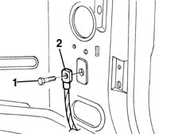

5505A30 earth carrier node (one) - r+r
- Path
- Procedures > 55 ELECTRICAL EQUIPMENT > 5505 INSTRUMENT/GUAGE ELECTRICAL WIRING > 5505A multi-function components > 5505A30 earth carrier node (one) - r+r
- Kind
- repair procedure (removal / refitting; the operation number is the code)
- Applies to
- all engines; all production periods
- Interactive page
- https://sloeber94.github.io/elrnDB-fMltpl/en/#/2891868
Applies to: all engines; all production periods
 Removing
Removing
 Refitting
RefittingRemove the components preventing access to the earth connector.
1. Undo the bolt.
2. Remove the earth connector.

Applies to: all engines; all production periods
Refitting
RemovingCheck that the seal is not damaged and that the cables are correctly secured.
Check that the mounting area provides a clean, secure connection.
Position the earth connector and fix it using the bolt.
Test the operation of the systems connected to that earth.